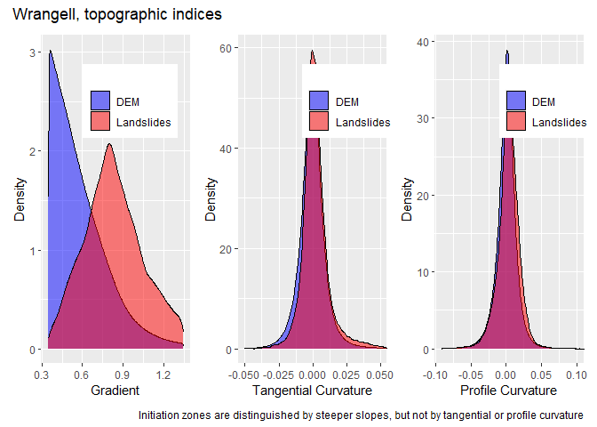
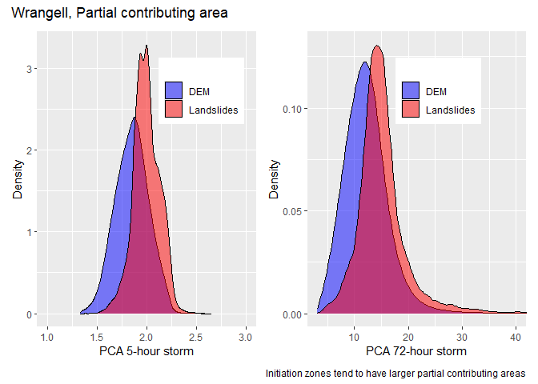
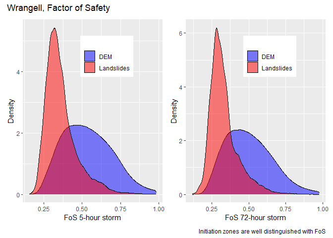
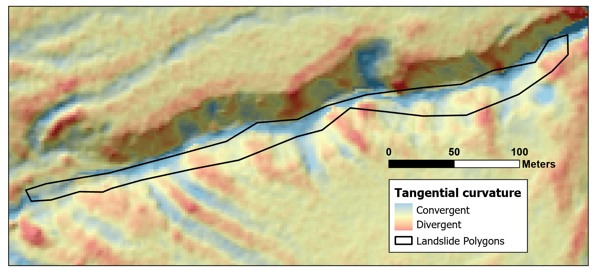
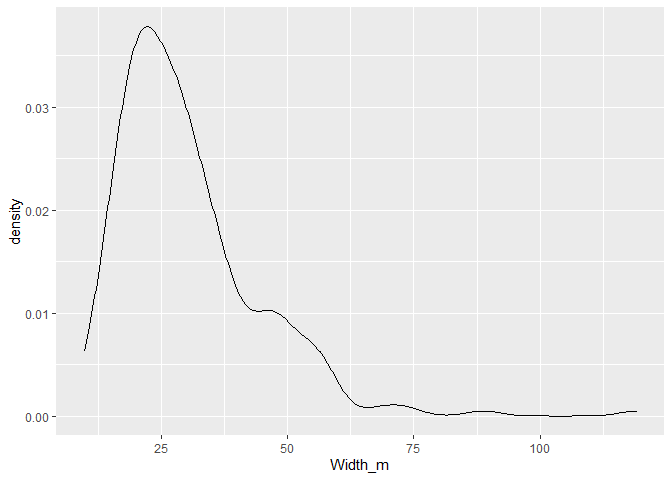

Initiation
Dan 2025-04-03
Last access: 2025-04-03
Questions:
How does the frequency distribution of potential predictors within initiation zones compare to potentially unstable terrain overall?
Can initiation-zone geometry be related to topographic indices? For example, is the initiation-zone width or area related to tangential curvature?
Use program LS_poly.
Filter the inventory to debris avalanches and debris flows.
Using the “flattenWatermask” code from the DEM_module, generate center lines for each landslide polygon.
Translate center lines to linked nodes.
Build a “closest-node” raster within each polygon.
Get mean, minimum, and maximum values of topographic indices associated with each node.
Get average polygon width as area/center-line-length.
Delineate an initiation zone with length equal to mean width.
Program LS_poly generates an output node point shapefile of centerlines. Each node has associated attributes for horizontal distance from the top of the polygon, upslope area, node-associated slope, tangential curvature, and what ever else we might want to examine, e.g., a modeled factor of safety. To delineate the likely (I hope) initiation zone, I took the area associated with nodes within the mean polygon width of the up-slope extent of each polygon. We can look at the distribution of topographic-index values for these initiation zones relative to the rest of the DEM. I’ll filter the DEM to include only index values within the range included in the initiation zones.
I’ll start by looking at some rasters created with makegrids and LS_init. Grad_15.flt is centered-window gradient over a radius of 7.5m (diameter of 15m). Init.flt is a raster mask representing assumed initiation zones generated as described above using LS_init; it has value 1 within the initiation zone and nodata (-9999.) elsewhere.
Get the gradient within the initiation zones.
init
<num>
1: 2.0276802
2: 1.9772296
3: 1.8767934
4: 1.7534219
5: 1.5707017
---
56149: 0.6181532
56150: 0.5843589
56151: 0.5613263
56152: 0.5544583
56153: 0.5748648The topography within these zones is determined using post-landslide lidar. Some portion of the zone may include head scarps with steeper gradients than the pre-landslide topography. Likewise, the initiating zone may be a subset of the mapped zone, since the boundary may expand either during or after failure. Given these factors, it seems appropriate to filter out the extreme low and high gradient values. I’ll do this using Tukey’s fences.
grad_15
<num>
1: 0.0016781257
2: 0.0014676113
3: 0.0008816146
4: 0.0009484029
5: 0.0025376051
---
142287760: 0.0019852403
142287761: 0.0032839631
142287762: 0.0049797115
142287763: 0.0068473923
142287764: 0.0075887116I want to exclude areas where landslides do not initiate from further analyses. I’ll create a mask based on the minimum and maximum gradient values identified above using the inter-quartile range. All subsequent candidate predictor rasters will be masked to include only areas within these zones.
I’ll generate density plots comparing the entire potential zone - areas within the gradient max-min - to the landslide initiation zones mapped from the Tongass inventory.
Let’s look at curvatures, using the tangential and normal-profile curvatures.
tan_30
<num>
1: -0.001563733
2: 0.039100818
3: -0.112947389
4: 0.001631375
5: 0.070557170
---
62095960: 0.008795259
62095961: -0.001758624
62095962: 0.001314139
62095963: -0.021429310
62095964: -0.020847192
init
<num>
1: -2.839516e-03
2: 6.272380e-04
3: 4.820361e-05
4: 3.461839e-03
5: 6.138285e-03
---
50508: 2.781242e-03
50509: 6.140798e-05
50510: -4.440819e-03
50511: -9.268362e-03
50512: -8.312606e-03
init
<num>
1: -0.043680564
2: -0.037604161
3: -0.043053936
4: -0.035328776
5: -0.027002966
---
50508: -0.001906125
50509: -0.002322283
50510: -0.002556668
50511: -0.001588161
50512: -0.007253157Plots:

The initiation zones appear to lie within generally steeper gradients than the landscape within this zone, but the distribution of curvatures appear the same. What other topographic indices might distinguish initiation zones within the steeper terrain? Let’s try partial contributing area, here for 5-hour and 72-hour duration storms.
init
<num>
1: 2.093175
2: 2.106313
3: 2.110173
4: 2.124039
5: 2.158817
---
50508: 2.128179
50509: 2.126740
50510: 2.134243
50511: 2.137588
50512: 2.110883
init
<num>
1: 14.79326
2: 15.04397
3: 17.40661
4: 17.94919
5: 18.56369
---
50508: 20.19516
50509: 20.64870
50510: 19.89801
50511: 18.86460
50512: 19.46936
There is some differentiation here, with initiation zones having slightly higher upslope accumulation zones than the terrain in general for both storm durations. Using a simple infinite-slope limit equilibrium model, we can calculate an approximate factor of safety (FoS) that incorporates effects of both slope and partial contributing area.
init
<num>
1: 0.2239085
2: 0.2437319
3: 0.2220742
4: 0.2388525
5: 0.2584022
---
50508: 0.4307395
50509: 0.4332415
50510: 0.4341389
50511: 0.4271371
50512: 0.4405518
init
<num>
1: 0.2083031
2: 0.2260092
3: 0.1998519
4: 0.2139148
5: 0.2302645
---
50508: 0.3698250
50509: 0.3695505
50510: 0.3741286
50511: 0.3737788
50512: 0.3811248
How about initiation-zone size? ls_poly.f90 produces an output csv file:
There appear to be no obvious relationships between any of these topographic indices and initiation-zone width. Next step: look for relationships between width of the entire polygon and topographic attributes. This will require improving alignment of the polygons. See the example below.

The landslide polygon roughly aligns with the channel it most likely traversed, but measures of topographic indices obtained within the polygon will not accurately represent the topography traversed by the landslide. Can we align the centerline of the polygon with the center of the channel (or swale?) indicated by the topography? Not all polygons have an obvious offset like this, so it will be a bit challenging determining which polygons to reposition and precisely how to reposition them.
What aspect of the topography should we examine? What length scales should we measure those topographic attributes over? I ran program ls_poly and output a csv file with polygon attributes.

Min. 1st Qu. Median Mean 3rd Qu. Max.
9.662 20.574 27.134 30.136 35.763 119.196 Modal width is around 22 meters, the mean is around 30 m. So 30 m seems like an appropriate length scale. Using tangential curvature as a measure of confinement, we might therefore look for the maximum curvature within a polygon cross section as a measure of the topographic confinement associated with that landslide. Using the closest-node raster within each polygon and finding the maximum tangential curvature associated with each node, we find these relationships with mean polygon width and polygon length:
I anticipated that smaller widths and longer lengths would be associated with larger maximum tangential curvatures. This is roughly true for length, but width does not appear to exhibit such a relationship. Nevertheless, the largest widths are associated with smaller maximum curvatures. Another option: apply a buffer around each polygon to account for the lack of precision and misalignment of the polygon boundaries. Create a nearest-node raster within the buffered polygon and get mean maximum curvature for the buffered polygon.